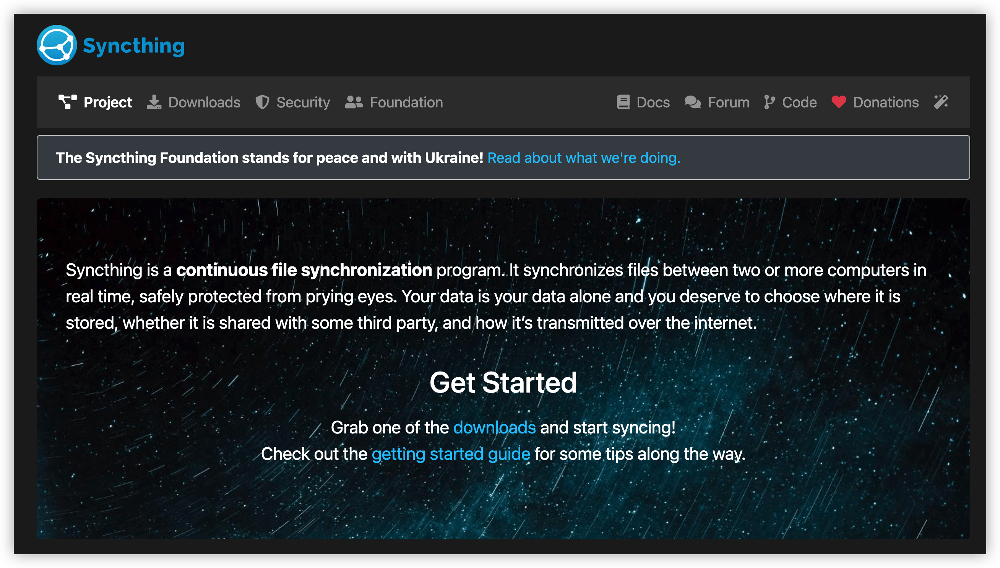
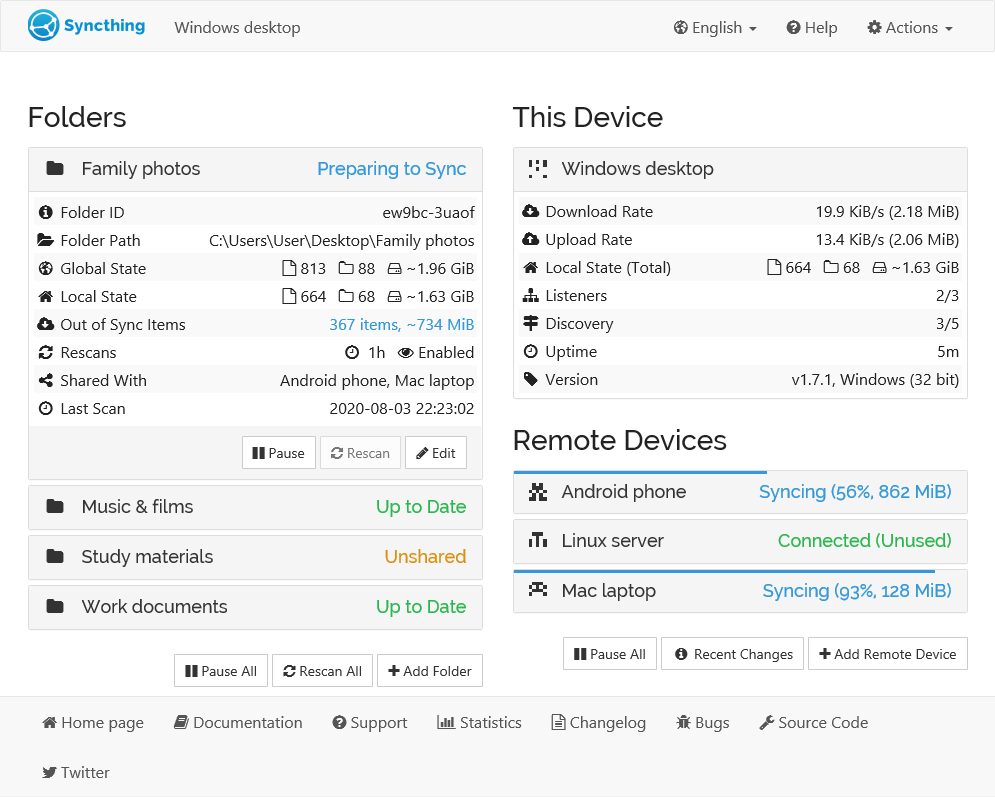
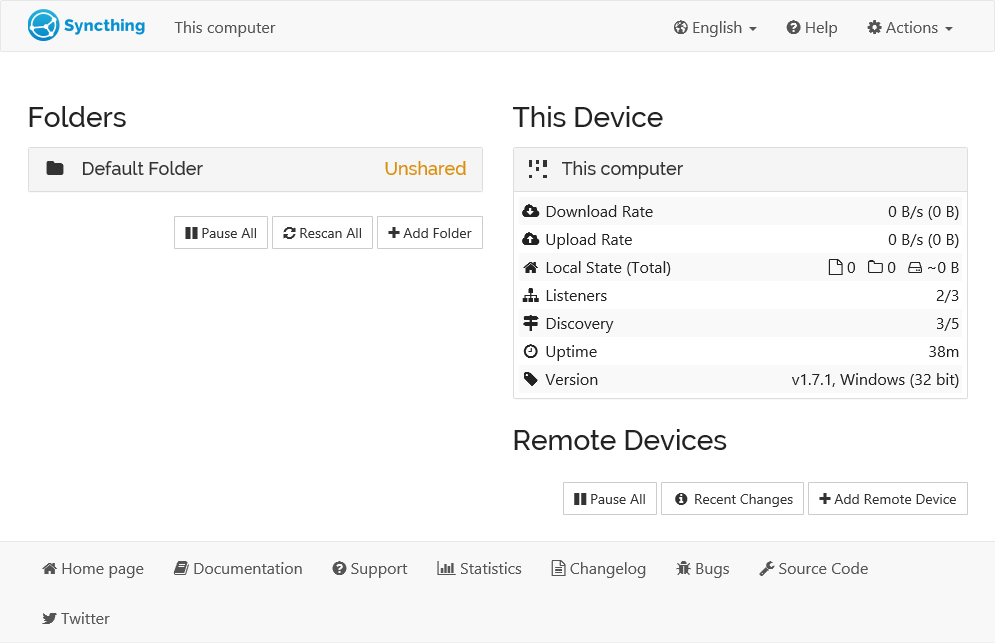
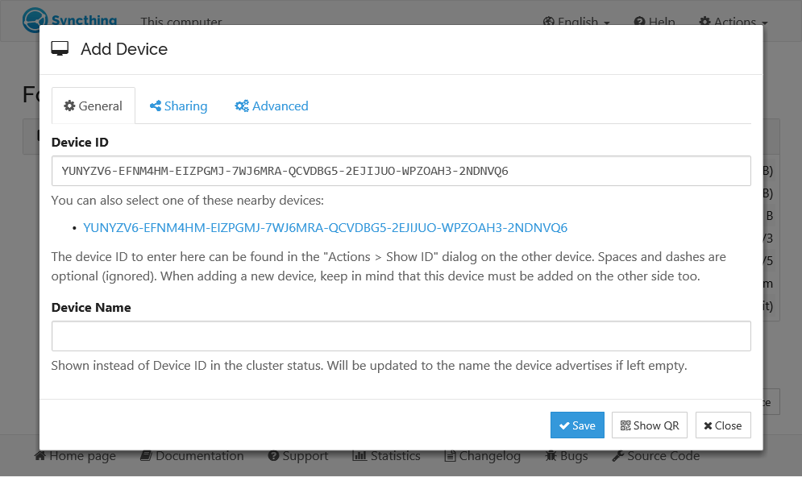
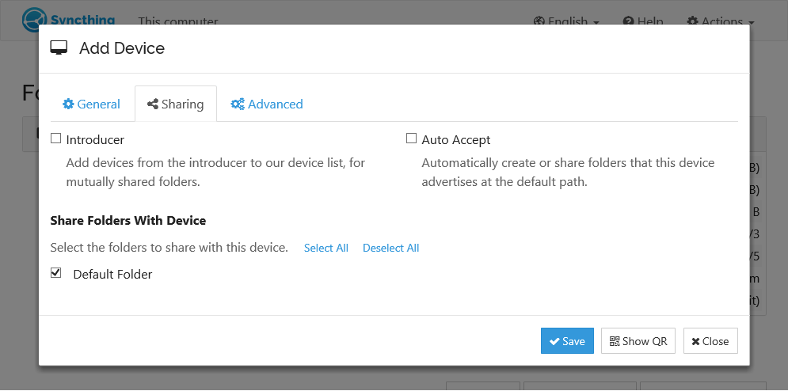
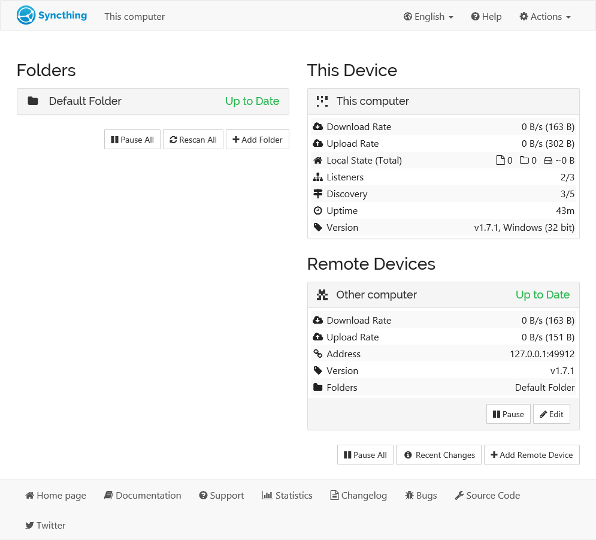

Syncthing：基于 P2P 技术实现设备间的文件同步！
Syncthing 是一个连续的文件同步程序，可以在两台或多台计算机之间实时同步文件，安全地防止窥探。选择你的的数据，选择你的存储位置，就可以通过互联网传输了。

1. 工具介绍
介绍 Syncthing 工具的主要特点和优势。
Syncthing 是一个使用 Go 语言来发的开源文件同步工具，可以在多台计算机之间实时同步文件。它致力于保护用户数据，确保安全、易于使用，并且可以在各种常见的计算机上运行。
- 安全性和隐私
Syncthing基于 P2P 技术 实现设备间的文件同步，所以它的同步是 去中心化 的，即你并不需要一个服务器，故不需要担心这个中心的服务器给你带来的种种限制。Syncthing致力于保护用户数据，确保不会丢失或损坏。它使用TLS加密来保护通信，并采用完美前向保密以防止窥探者获取数据。每个设备都使用强加密证书进行身份验证，只有经过明确允许的设备才能连接到其他设备。
- 易用性和功能
Syncthing旨在易于使用，可以在各种操作系统上运行，包括macOS、Windows、Linux等。它可以同步多个文件夹，支持局域网和互联网上的同步，无需复杂的IP地址或高级配置。用户只需将设备ID分享给其他设备，即可进行文件夹共享。

1. 安装方式
提供多种安装方式，以及图形化应用。
Syncthing 工具非常好安装，可以通过命令行模式使用。如果你感觉命令行使用非常不好用的话，就可以看看其跨平台的 Syncthing GUI 应用。
- 二进制 - 基础版本，不带图形界面
# Debian/Ubuntu
$ sudo mkdir -p /etc/apt/keyrings
$ sudo curl -L -o /etc/apt/keyrings/syncthing-archive-keyring.gpg https://syncthing.net/release-key.gpg
$ echo "deb [signed-by=/etc/apt/keyrings/syncthing-archive-keyring.gpg] https://apt.syncthing.net/ syncthing stable" | sudo tee /etc/apt/sources.list.d/syncthing.list
$ sudo apt-get update
$ sudo apt-get install syncthing
# 直接下载官方软件安装
$ sudo apt install -y syncthing.xxx.tar.gz
- 图形化 - 高级版本，带图形界面
# linux
https://github.com/kozec/syncthing-gtk/tags
https://forum.syncthing.net/t/difficulty-installing-running-syncthing-v-11-5-on-ubuntu-14-04/2761/5
# android
https://github.com/syncthing/syncthing-android/tags
# macOS
https://github.com/syncthing/syncthing-macos/tags
# iOS
https://www.mobiussync.com
- 容器使用 - 参考链接
Syncthing 的容器镜像托管在 Docker Hub 中，直接启动的时候指定对应镜像地址就可以了。可以通过指定 /var/syncthing 对应的目录进行同步，并且默认的 UID 和 GID 都是 1000，可以通过环境变量进行指定，还可以通过 --hostname=syncthing 来改变实例的名称。
要在不以 root 身份运行的情况下，需要给 Syncthing 镜像额外的系统权限。使用 PCAP 环境变量授权，比如 PCAP=cap_chown,cap_fowner+ep。
# docker cli
$ docker pull syncthing/syncthing
$ docker run --hostname=my-syncthing \
-p 8384:8384 -p 22000:22000/tcp \
-p 22000:22000/udp -p 21027:21027/udp \
-v /wherever/st-sync:/var/syncthing \
syncthing/syncthing:latest
version: "3"
services:
syncthing:
image: syncthing/syncthing
container_name: syncthing
hostname: my-syncthing
environment:
- PUID=1000
- PGID=1000
volumes:
- /wherever/st-sync:/var/syncthing
ports:
- 8384:8384 # Web UI
- 22000:22000/tcp # TCP file transfers
- 22000:22000/udp # QUIC file transfers
- 21027:21027/udp # Receive local discovery broadcasts
restart: unless-stopped
3. 使用方式 - 设置文件同步
介绍如何快速上手，使用 Syncthing 工具进行文件同步。
- 1. 启动服务
安装完成之后，将会有一个名为 syncthing 的可执行二进制文件。首次运行命令的话，Syncthing 将生成一个配置文件、一些加密密钥，然后在浏览器中启动管理 GUI。当然，可以通过图形化程序，双击进行打开。
# 启动服务
# https://docs.syncthing.net/users/syncthing.html
$ syncthing
INFO: Default folder created and/or linked to new config
INFO: My ID: 6FOKXKK-xxx
INFO: TCP listener ([::]:22000) starting
INFO: GUI and API listening on 127.0.0.1:8384
INFO: My name is "This computer"
INFO: Detected 0 NAT services
- 2. 互相添加对方为远程设备
左侧的 Folders 就是需要共享的文件目录列表，目前尚未与任何其他设备共享。右侧的 This Device 是本机的目录列表，下面的 Remote Devices 是需要远程备份的列表服务器。
而同步的操作，需要通过交换 设备 ID 来实现的。该设备 ID 是一个唯一的加密安全标识符，并在你首次启动 Syncthing 时作为密钥生成的一部分生成。当然，也可以通过在 GUI 中查看到。只有当两台设备都配置了彼此的设备 ID 时，它们才会相互连接和通信，其本质上是公钥的一部分。

单击两台设备右下角的 Add Remote Device，然后输入另一侧的设备 ID。设备名称是可选的，改成我们好记忆的就可以了。单击 Save 后，新设备将出现在 GUI 的右侧，即使已断开连接的设备。

- 3. 设置需要共享的文件夹
此时，默认情况下，两个设备共享一个 Default Folder 空目录。如果要同步其他文件夹的话，需要事先添加。之后，将文件添加到任一设备上的共享目录都会将这些文件同步到另一端。


如果在连接设备时遇到问题，请先查看防火墙设置，然后查看 GUI 或控制台上的错误消息。不要忘记配置更改不会立即反映出来，尤其是在重新启动后。
4. 使用方式 - 更多高级功能
介绍如何快速上手，使用 Syncthing 工具进行文件同步。
- 1. 版本控制
- 是否开启：默认不开启版本控制
- 打开方式：同步文件夹下面的选项中进行设置
- 选项说明：可以选择版本控制类型和保留数量
Syncthing 也提供了版本控制功能，它可以记录一个文件的删除和修改历史，你可以根据自己的需要将文件恢复到之前的某一状态。
然而需要特别指出的是，它只记录远程设备对这个文件的修改和删除，并不记录本机对于文件的修改和删除。此外在设备 A 开启共享文件夹的版本控制并不会影响到设备 B，即每个设备需要各自开启版本控制。
- 2. 忽略文件
有时，我们不希望接收远程设备同步全部文件过来，比如一些隐藏文件等。可以点击文件夹的选项，选择 忽略模式，配置该文件的名称，那后续这个文件不会再被同步，不管远程设备对这个文件做了什么样的修改。
- 3. 文件同步冲突
共享文件夹中的文件可以被多个设备所修改，所以存在同步发生冲突的可能。Syncthing 对于文件冲突的解决方法是：两个修改后的文件都会被保留，具体需要保留哪个文件由用户自行选择。
- 4. 搭建发现服务器 - 参考博客
Syncthing 能够实现处于不同局域网之中的两台设备之间的同步，这实际上有赖于发现服务器（Syncthing Discovery Server）的协助，否则它们不能发现彼此。Syncthing 默认使用官方提供的全球发现服务器集群，不过你也可以自己搭建一个，在自己的服务器上。你可以设置 Syncthing 使用某一台发现服务器。
- 5. 使用中继服务器 - 参考博客
当两台设备无法直接相联的时候，Syncthing 可以通过中继服务器进行数据的传输。目前有一批默认的公共中继服务器可供使用，如果你想自己搭建，也是可以的。当然中继传输的速度是不如直连，不过在无法直连的情况，也只能使用中继传输。关于中继服务器的安全隐私问题，你不用担心数据泄露，因为数据是端到端加密的，中继服务器只传递加密后的数据，但是中继服务器是知道连接的用户 IP 和设备 ID。
5. 常见问题
介绍使用 Syncthing 工具时，遇到的问题以及解决方法。
- 问题一：
Distribution Package Preferred Over This Version
# 调整优先级
$ printf "Package: *\nPin: origin apt.syncthing.net\nPin-Priority: 990\n" | sudo tee /etc/apt/preferences.d/syncthing.pref
- 问题二：
HTTPS Method Driver Missing
# 运行apt-get时看到类似于以下错误的错误
E: The method driver /usr/lib/apt/methods/https could not be found.
N: Is the package apt-transport-https installed?
E: Failed to fetch https://apt.syncthing.net/dists/syncthing/InRelease
# 更新下就行了
$ sudo apt-get install apt-transport-https
- 问题三：
Server Certificate Verification Failed- 对应较旧的发行版，系统
TLS证书存储可能已过时。自2021年10月以来，必须安装较新的根证书。
- 对应较旧的发行版，系统
# 运行apt-get时看到类似于以下错误的错误
E: Failed to fetch https://apt.syncthing.net/dists/syncthing/stable/binary-armhf/Packages
server certificate verification failed. CAfile: /etc/ssl/certs/ca-certificates.crt CRLfile: none
E: Some index files failed to download. They have been ignored, or old ones used instead.
# 更新下就行了
$ sudo apt-get update
$ sudo apt-get install ca-certificates
6. 参考地址
送人玫瑰，手有余香。